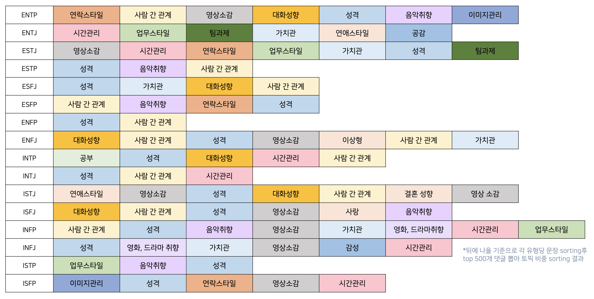
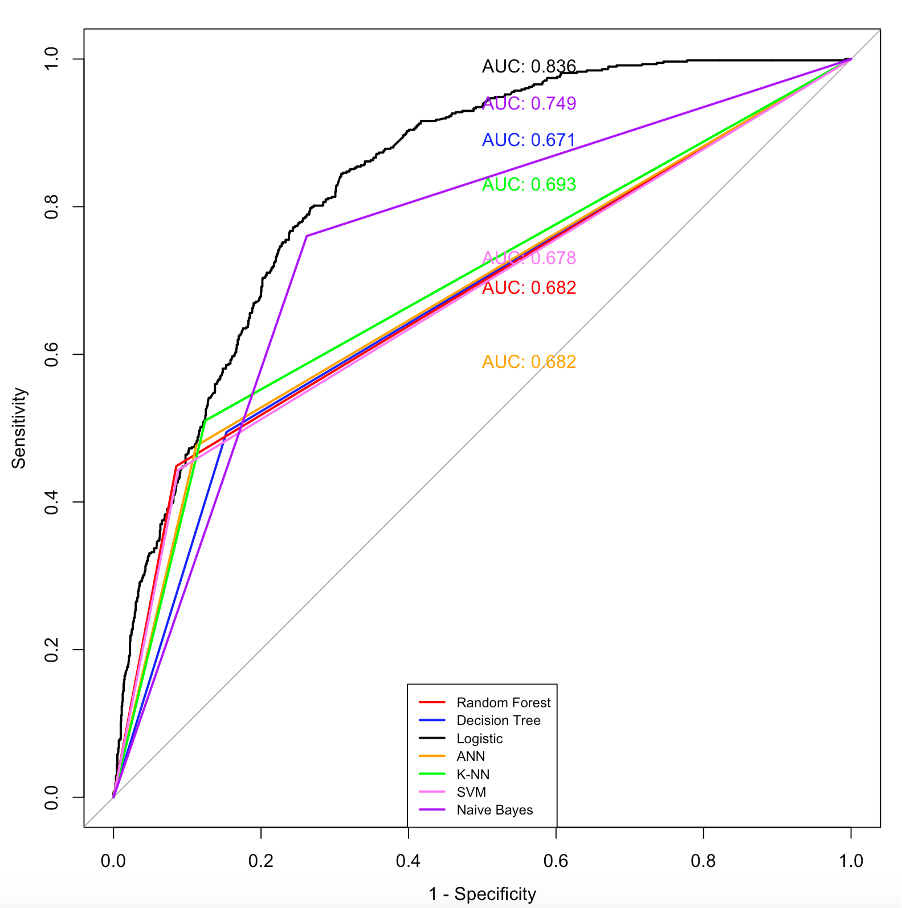
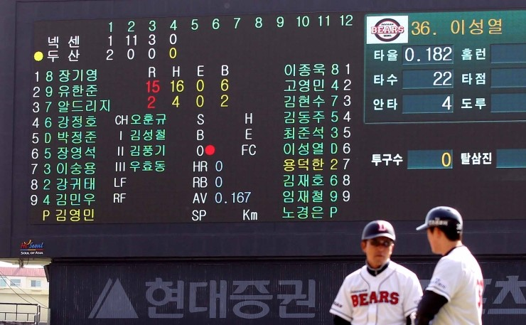
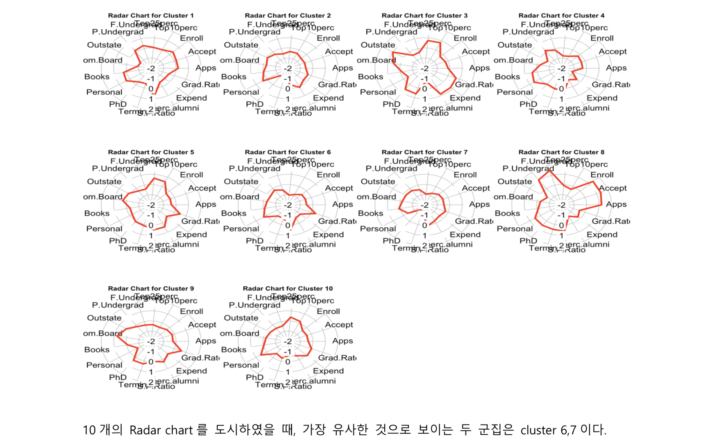

Project
> Data
빅데이터 분석보고서 경진대회 [우수상]
2018.1.31
숙박 앱 ‘데일리호텔’에 대해 데이터에 기반한 마케팅 전략을 제시함. SNS 데이터 분석을 통해 ‘레스토랑 예약서비스 고매’의 경쟁력을 확인하고, 레스토랑 마켓리더의 부재를 실감함. '고메'의 인식부족에 대해 ``고`마운 연인을 위한 `메`시지` 와 같이 단어를 인식시키는 통합마케팅 전략을 제안하여 우수상을 수상함.
pdf 보기

Youtube 댓글을 통한 MBTI 분석
2021.03 ~ 2021.06
Youtube MBTI 댓글 약 108만건을 수집하여 토픽모델링을 통해 MBTI별 토픽을 뽑아 검증 설문 문항을 선정하여 공감가고 재미있는 실생활 행동 유형과 관련한 ‘실생활 예시 기반 MBTI 테스트’ 를 제작
검사링크
pdf 보기

고객이탈예측모델 [데이터마이닝]
2019.03 ~ 2019.06
고객이탈여부(Churn) 데이터로 다양한 모델(Supervised Learning : Logistic Regression, Decision Tree 등 7개, Clustering 3개)을 R을 통해 구현해보고, 여러 평가지표(Recall, F1 등)를 통해 성능을 비교하여 최종예측모델을 선정. 신규고객유치비용, 대응마케팅비용 등 총 비용을 줄일 수 있는 최종모델을 선정함.
pdf 보기

최적야구타선모델링 [경영공학개론]
2017.03 ~ 2017.06
야구 선수들의 능력을 수치화하여 정해진 상대팀에 대해 가장 승률이 높도록 모델링. 타자는 도루(wSB1)), 타율 (BABIP2)), 장타율(OPS3)) 등, 투수는 수비무관평균자책점(6)FIP), 이닝(IP) 등의 데이터를 사용. 능력에 영향을 미치는 정도로 parameter를 부여함으로써 합을 최대화해서 OR로 통해 최적의 타선을 구성함.
pdf 보기

머신러닝 with R [다변량분석]
2019.03 ~ 2019.06
다변량분석 과제로 association rules, supervised learning algorithms (classification & regression) , unsupervised learning algorithms (clustering) 에 대해 여러 데이터를 가지고 R로 알고리즘 모델을 구현함.
Github 자료